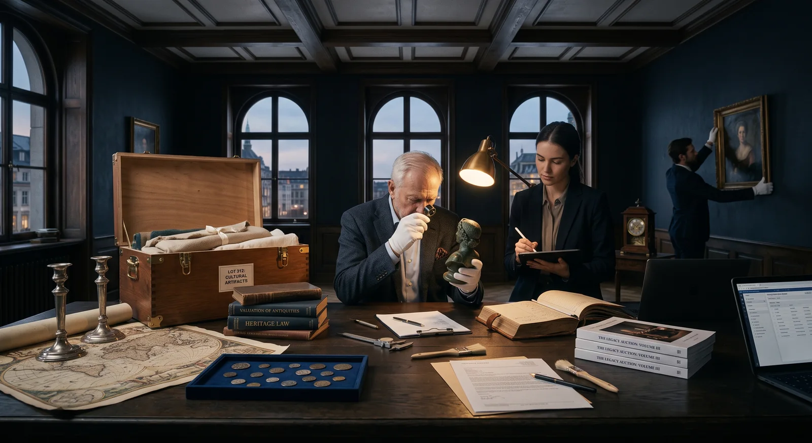
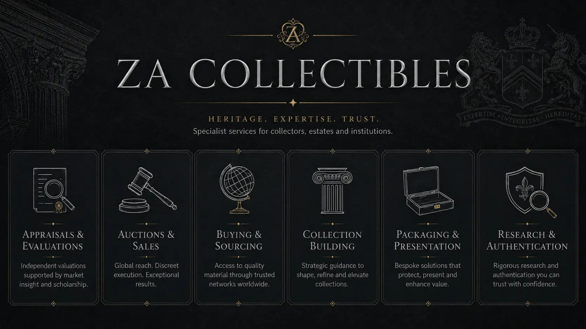

One House.
Six Ways to Create Value.
Appraisal, research, market access, sourcing, collection work and presentation operate as equal services. Use one independently or connect several around the needs of an item or collection.


One Evidence Chain Around the Object.
The services remain distinct because the questions are distinct. They connect because better identification, documentation and presentation often create value before any sale occurs.

Appraisals & Evaluations
Identification, condition, authenticity risk and valuation ranges matched to the decision the client must make.
Explore appraisals →
Research & Authentication
Marks, provenance, documentary evidence and specialist escalation brought together without overstating certainty.
Explore research →
Buying, Selling & Auctions
Direct purchase, private sale, consignment and auction routes selected for the item, audience and objective.
Explore market services →
Private Sourcing
Want lists, candidate screening and discreet acquisition support for collectors seeking specific pieces.
Explore sourcing →
Collection Services
Inventory, mapping, gap analysis, documentation, collection building and disposition planning.
Explore collection work →
Preserve & Present
Cards, dossiers, catalogues and cases that protect the object and keep its evidence attached.
Explore presentation →No Artificial Hierarchy.
The right starting point depends on the client. A person may arrive to sell, source, research, organise or preserve. ZA Collectibles identifies which combination creates the most value without forcing every enquiry through the same funnel.